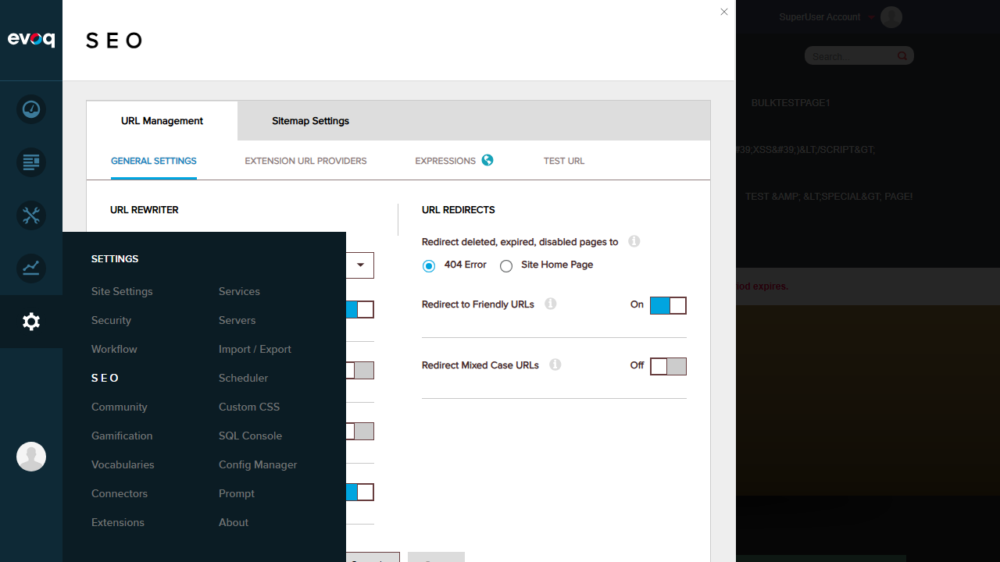

Test Case: Retrieve Configuration Successfully
TC-01: Verify URL Management Configuration Loads
PASSObjective: Verify that the URL Management Configuration Settings page loads successfully and displays all configuration options.
Steps Taken:
- Logged in as SuperUser (host/Pass123456)
- Navigated to Persona Bar > Settings
- Selected SEO from the settings menu
- Verified URL Management tab is selected by default
- Confirmed GENERAL SETTINGS tab displays configuration options

Step 1: Settings menu showing SEO option

Step 2: URL Management Configuration successfully loaded
Expected Result: Configuration page loads with all URL rewriter and redirect settings visible.
Actual Result: Configuration loaded successfully. All settings are displayed:
| URL REWRITER Settings | |
|---|---|
| Standard Replacement Character | "-" e.g. page-name |
| Concatenate Page URLs | On |
| Convert URLs to Lowercase | Off |
| Convert Accented Characters | Off |
| Set Default Site Language | On |
| URL REDIRECTS Settings | |
| Redirect deleted, expired, disabled pages to | 404 Error (selected) |
| Redirect to Friendly URLs | On |
| Redirect Mixed Case URLs | Off |
Verdict: The URL Management Configuration Settings feature successfully retrieves and displays all global URL management configuration options as expected.